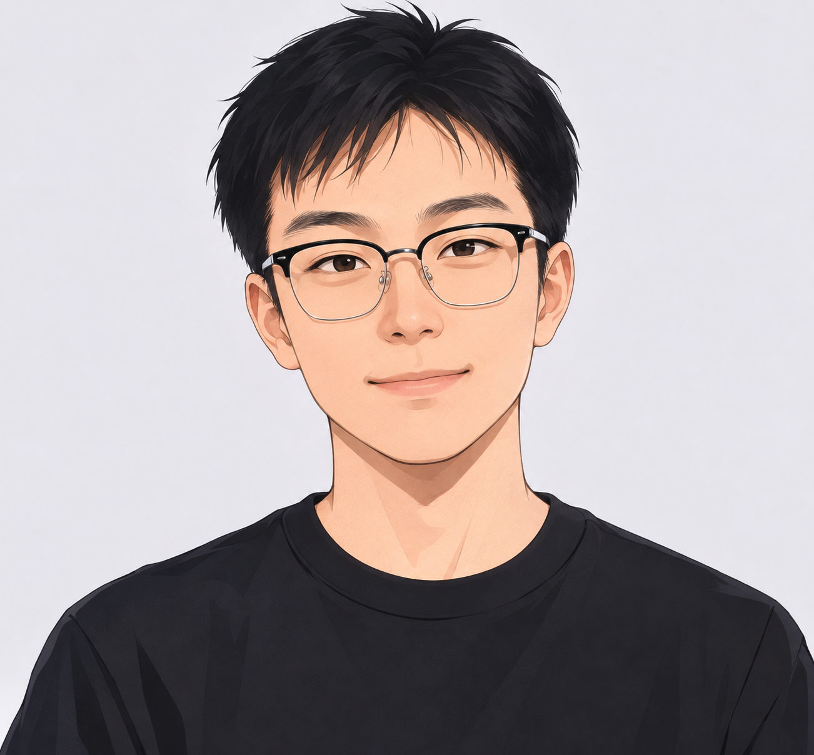

プロフィール
こんにちは。拓殖大学工学部情報工学科で学んでいます。
大学では、情報工学やプログラミングについて勉強しています。

趣味・関心
コンピュータ、人工知能、ロボット技術に興味があります。
新しい技術を学び、自分の知識やスキルを高めていきたいです。
これからの目標
大学で専門知識を身につけ、将来は人工知能やロボットに関する研究に取り組みたいと考えています。
拓殖大学 工学部 情報工学科
Welcome to my website!
こんにちは。拓殖大学工学部情報工学科で学んでいます。
大学では、情報工学やプログラミングについて勉強しています。

コンピュータ、人工知能、ロボット技術に興味があります。
新しい技術を学び、自分の知識やスキルを高めていきたいです。
大学で専門知識を身につけ、将来は人工知能やロボットに関する研究に取り組みたいと考えています。